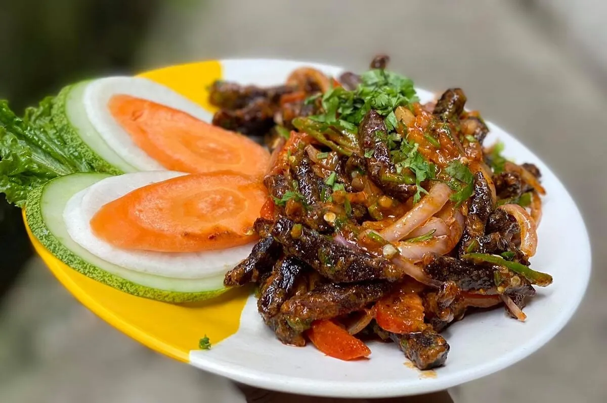
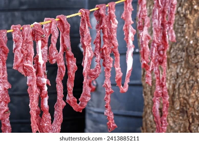
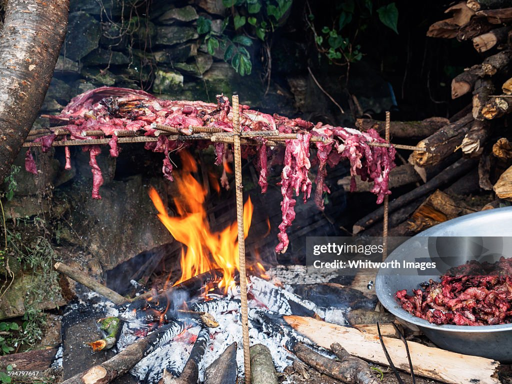
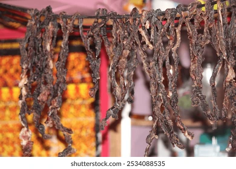

Home
Sukuti

Description
Sukuti is one of Nepal’s most cherished traditional delicacies, especially loved in the hill and mountain regions where drying meat was once a necessity. Its bold flavour, chewy texture and smoky aroma make it a favourite among locals, often enjoyed with beaten rice or a strong glass of raksi.
Sukuti is essentially dried meat that has been seasoned, smoked and preserved using traditional methods. Typically made from buffalo or goat, the meat is sliced thin, rubbed with a blend of spices and left to dry either over a wood fire or under the sun.
Ingredients
- 500g lean buffalo or goat meat (thinly sliced, boneless)
- 2 tbsp mustard oil
- 1 tsp turmeric powder
- 2 tsp cumin powder
- 1 tsp coriander powder
- 1 tsp fenugreek seeds
- 1 tsp red chilli powder (adjust to taste)
- 1 tsp Sichuan pepper (timur), crushed
- 1 tbsp ginger and garlic paste
- Juice of 1 lime
- Salt to taste
- 2 tbsp chopped fresh coriander (for garnish)
- 1 medium red onion, thinly sliced (for serving)
- Optional: 1 tbsp dried chilli flakes (for extra heat)
Instructions



- Prepare the Meat
Begin by trimming excess fat from the meat and slicing it into thin strips around 5 mm thick. Thinner slices dry faster and absorb marinade better. Pat the meat dry with paper towels to remove surface moisture.
- Marinate the Meat
Place the meat in a large mixing bowl. Add mustard oil, turmeric, cumin, coriander, red chilli powder, Sichuan pepper, ginger and garlic paste, and salt. Squeeze in the lime juice. Mix thoroughly using your hands to massage the spices deep into the meat fibres. Cover and refrigerate for at least 4 hours or preferably overnight.
- Dry the Meat (Air Drying Method)
Thread the marinated meat strips onto metal skewers or kitchen safe twine. Hang them in a well ventilated, dry, sunlit area for 2 to 3 days, depending on humidity. Turn the meat once daily. It should be firm, dry, and slightly leathery to the touch.
- Alternative Drying (Oven Method)
If outdoor drying is not possible, preheat your oven to 80°C. Line a baking tray with foil and place a wire rack over it. Lay the marinated strips on the rack in a single layer. Let them dry for 3 to 4 hours, turning once halfway, until thoroughly dehydrated.
- Toast the Fenugreek Seeds
In a small dry pan, toast the fenugreek seeds on low heat until dark brown and fragrant. Be careful not to burn them. Crush them lightly with the back of a spoon and set aside for final seasoning.
- Flash Fry the Sukuti
Heat 1 tbsp of mustard oil in a pan until smoking point is reached (to neutralise its raw flavour). Add the dried meat pieces and fry for 1 to 2 minutes until crisp on the outside but still chewy inside. Do not overcrowd the pan.
- Final Seasoning
Sprinkle the crushed toasted fenugreek and dried chilli flakes (if using) into the pan. Toss well to coat the meat. Remove from heat immediately to avoid burning the spices.
Serve
Place the warm sukuti on a serving plate. Top with freshly sliced onions and chopped coriander. Serve with puffed rice (bhuja), beaten rice (chiura), or a squeeze of lime for added zing.